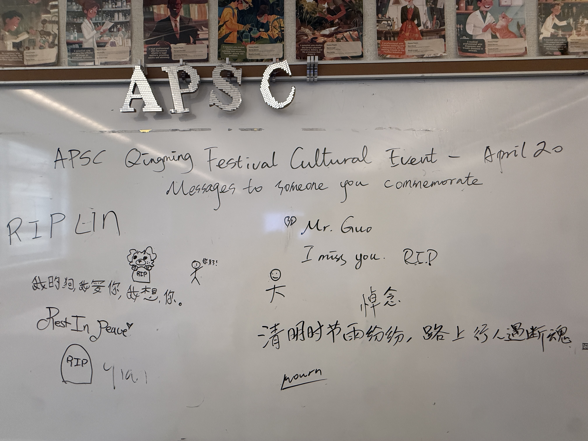
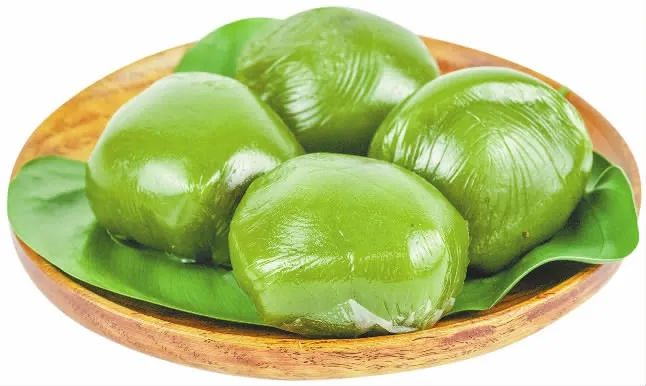

2026 Qingming Festival Event

Commemorate the Past, Embrace the Future
During the event, members and supporters gathered together to commenmorate the one they lost by leaving messages on the memorial wall, sharing their stories and memories. The event also featured a moment of silence to honor the departed. We also introduced the history and significance of the Qingming Festival, and how it is celebrated in different cultures. Through this event, we aimed to create a space for reflection, remembrance, and connection among our members and the wider community. We are grateful for everyone who participated and contributed to making this event meaningful and impactful.


Taste of Tradition
The event also featured a variety of traditional foods and snacks that are commonly enjoyed during the Qingming Festival. We had a food stall that offered traditional Chinese pastries, such as qingtuan (green rice balls), which are popular treats during this time of year. Attendees had the opportunity to taste these delicious treats while learning about their cultural significance and the traditions associated with the festival. We believe that food is a powerful way to connect with culture and heritage, and we were delighted to share this aspect of the Qingming Festival with our community.